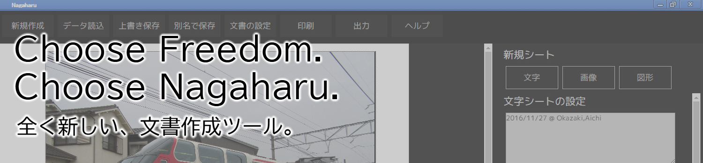

最新情報
Nagaharu 1.0.2 Stableを公開しました。(2017-1-21) NEW!過去の更新履歴
ダウンロード
動作環境：Windows 7/8/8.1/10Nagaharu 1.0.2 Stable 通常版 (2017-1-21) - ダウンロード(Google Drive、54MB)
Nagaharu 1.0.2 Stable アップデートキット (2017-1-21) - ダウンロード(Google Drive、13MB)
リリースノートは こちら
【アップデートキットについて】
アップデートキットは、既存のNagaharuをアップデートしたい方向けです。
初めて使う方は、通常版を選択して下さい。
ドキュメント
Nagaharuに内蔵されているヘルプと同じ物を こちら で閲覧できます。Nagaharuとは？

Nagaharuは、ポスターやお知らせ文書等、「1ページでシンプルな文書」の制作に適した
簡単文書編集ソフトウェアです。NW.jsで作られています。
特徴
・マウスで視覚的にパーツを編集できます
・文字のサイズ変更、色の設定、縦書きなど様々な機能を備えています
・画像を読み込み、自由に拡大縮小ができます
・ゴシック2種、明朝1種のフォントがソフトウェアに内蔵されており、Nagaharu同士なら再現度は100%です
・インストールが必要無いので、USBメモリで持ち運べます
ライセンス
NagaharuはMITライセンスで提供しています。個人・法人問わず自由に使え、改良した新しいソフトウェアの制作も自由ですが、
著作権表示および許諾表示をソフトウェアのすべての複製または重要な部分に記載する必要があります。
また、同梱されているフォントに付きましては、各配布条件に従って下さい。
ソースコード：GitHub
同梱フォント (Migmixﾌｫﾝﾄ)のライセンス：こちら
同梱フォント (IPAﾌｫﾝﾄ)のライセンス：こちら
リンク集
AraTech Official Website ・・・製作者の公式ホームページです。Twitter (@arkw0) ・・・製作者の公式Twitterです。
Twitter (@NagaharuDTP) ・・・Nagaharuの公式Twitterです。
(c)2015-2017 Sora Arakawa all rights reserved.